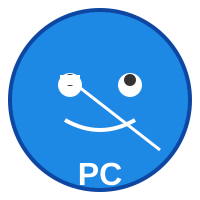

PC Doctor
Tu asistente médico digital confiable
Descargar PC Doctor
📄 Tamaño: 45 MB | Windows 10/11 | Versión 2.1.0
📋 Instrucciones de Descarga
- Haga clic en el botón azul de arriba
- Espere a que se descargue el archivo
- Busque el archivo en su carpeta "Descargas"
- Haga doble clic para instalar
- Siga las instrucciones en pantalla
🔒 Descarga Segura y Verificada
✓Archivo escaneado contra virus - 100% limpio
✓Firma digital verificada - desarrollado por Equipo PC Doctor
✓Conexión segura HTTPS